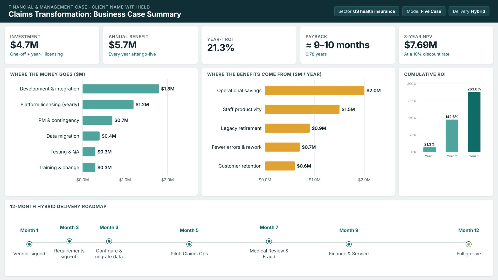

Claims Processing Transformation for a US Health Insurer
The insurer serves more than 6 million members across 18 US states, but its claims ran through disconnected systems and took 18 business days on average. As the Business Analyst, I wrote the Five Case Model business case and the executive presentation recommending one integrated claims platform.
- Total project cost
- $4.7M
- First-year ROI
- 21.3%
- 3-year NPV at 10%
- $7.69M
Read the case study
The problem
Staff switched between several systems to handle a single claim. Managers couldn't see claim status or KPIs, compliance checks were manual, and running legacy systems side by side was expensive.
What I did
- Compared four options, from doing nothing to building in-house
- Built the cost-benefit analysis, ROI, payback and NPV
- Shortlisted four vendors for a competitive tender
- Planned a 12-month hybrid rollout, department by department
What the numbers showed
Buying a proven platform beat building one. $5.7M in yearly benefits against a $4.7M cost gives payback in about 9 to 10 months, and the return reaches 263.8% by year three.
Outcome
A full business case and a 10-slide executive deck, with a risk register, communication plan and success KPIs, including cutting claim time from 18 days to 5. I updated it after tutor feedback.
Full documents available on request, with client details removed.